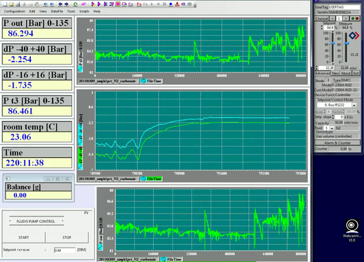

آزمایش امروز
کار در آزمایشگاه یک حسن بزرگ دارد. شاید هم دو تا. اول این که آدم دنیای واقعی را میبیند و تجربه میکند. دنیای واقعی گفتم در برابر مدلهای ریاضی و محاسبات کامپیوتری. دوم این که آدم نتیجه کارش را زود میبیند. چه موفقیت باشد چه شکست. از دوشنبه درگیر سرهم کردن تجهیزات بودم تا امروز عصر که همه چیز آماده شد و شکستم را با روی باز پذیرفتم. یک تکه لوله کهنه را تکنیسین استفاده کرده بود برای یک اتصال مهم. از محل اتصال نشتی داشت. توی فشار پایین نشتی معلوم نبود. فشار را که بردم بالا همه جا را آب گرفت. اغراق میکنم البته. مجموعن ده سیسی آب ریخته بود کف اجاق (اجاق ترجمه خوبی هست برای آون؟). خلاصه که تصمیم گرفتم حالا که آزمایش هنوز شروع نشده یکی دو تا از قطعهها را عوض کنم تا نتیجه را بهتر بشود مقایسه کرد با آزمایش قبل. آن یکی آزمایش دیگرم البته خوب جلو میرود. امشب تمامش میکنم. فردا هم آزمایشهای کشش سطحی را داریم و این بخش از کار تمام میشود. محلول آب و صابون را آماده کردهام برای آزمایش.
ساندویچ آخر امروز را گاز میزنم. نان تست، کالباس مرغ، و کاهو. خشک و کممزه است. با هر لقمه یک قلپ آب میخورم. جهت مقایسه قیمت: یک بسته بزرگ نان تست حدود بیست و پنج برش دو یورو. یک بسته کوچک کالباس مرغ حدود صد گرم یک یورو و هشتاد سنت. یک بسته چهارصد گرمی کاهوی سالاد آماده مصرف دو یورو. هشت برش نان تست خوردم به اضافه همهٔ کاهو و کالباس. از صبح چهار برش هم نان تست کشمشی خوردم با کره بادام زمینی. دیشب مریم کلمپلوی شیرازی پخته بود. به قصد کشت خوردم. احتمالن جغد یا اژدهایی در معدهام لانه کرده و همه این ورودیها را میبلعد و وزنم را ثابت نگه میدارد. هنوز هم ته دلم خالیست. سهمیه موز امروزم را هم دارم میخورم.
این چرت و پرتها را دارم مینویسم که آزمایش به تعادل برسد و بساطم را جمع کنم بروم خانه. شبها خودم را با مقاله انرژی ژئوترمال (زمینگرمایی؟) سرگرم میکنم. تنوع بد نیست.
آزمایش به چنان تعادل خوبی رسیده که اشک در چشمان آدم جمع میشود. سه تا نقطه دیگر مانده که امشب تمام میشود. دادهها را هم قبل از عید آنالیز کنم راحت میشوم.
کنجکاوید نتیجه آزمایش را ببینید؟ خدمت شما:

دیدگاهها
Comments powered by Disqus